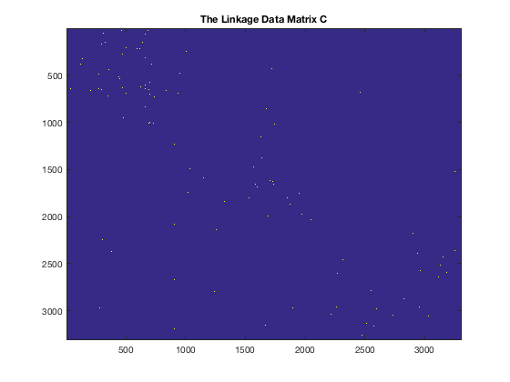
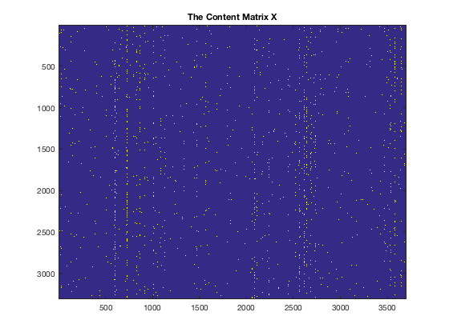

Preprocessing the docuement network data to extract the linkages and the content information
clear all close all clc datasets = {'cora', 'citeseer', 'cornell', 'texas', 'washington', 'wisconsin'}; processing_data_id = 2; load(['./' datasets{processing_data_id} '/raw_' datasets{processing_data_id}]); disp(['proprecessing the dataset: ' datasets{processing_data_id}]) % Content information webpage_ids = eval([datasets{processing_data_id} '_ids']); webpage_classnames = eval([datasets{processing_data_id} '_classnames']); W = eval([datasets{processing_data_id} '_W']); cited_ids = eval([datasets{processing_data_id} '_cited_ids']); citing_ids = eval([datasets{processing_data_id} '_citing_ids']);
proprecessing the dataset: citeseer
Check the unique paper id set
webpage_unique_ids = unique(webpage_ids); if length(webpage_ids) == length(webpage_unique_ids) s = sprintf('The webpage id is unique and no duplications'); disp(s) else error('repetitive webpages in the content'); end
The webpage id is unique and no duplications
check if the linkages' paper id are in the content
citing_set = unique(citing_ids); cited_set = unique(cited_ids); citing_indicator = ismember(citing_set, webpage_ids); cited_indicator = ismember(cited_set, webpage_ids); % webpage_ids contain the unique identifier for each webpage, % so we index each citing/cited instances with that identifier. [~, citing_index] = ismember(citing_ids, webpage_ids); [~, cited_index] = ismember(cited_ids, webpage_ids); % remove the papers that cites oneself ind = find(cited_index == citing_index); if ind cited_index(ind) = []; citing_index(ind) = []; disp('removing papers that cite oneself'); end if all(citing_indicator) & all(cited_indicator) s = sprintf('All lingkage instances are included in the content'); disp(s); else disp('linkages'' docuement set is not included in the content'); % remove unused webpages in the content rm_citations = citing_index & cited_index; rm_idx = find(rm_citations == 0); disp(length(rm_idx)); % number of removed elements citing_index(rm_idx) = []; cited_index(rm_idx) = []; end
removing papers that cite oneself
linkages' docuement set is not included in the content
17
Construct the linkage network matrix C
C = sparse(citing_index, cited_index, ones(length(citing_index),1), length(webpage_ids), length(webpage_ids)); C = C | C.'; C = C - diag(diag(C)); % # it is not necessary to remove those instances have contents but with null linkages % rm_idx = find(sum(C,1) == 0); % remove the null citations % if rm_idx % disp('we have to remove some instances due to that they have no linkages to others'); % else % disp('This is a good data that we do not need to remove instances'); % end % % C(rm_idx, :) = []; % C(:, rm_idx) = []; % C = C | C.'; % % W(rm_idx, :) = []; % webpage_classnames(rm_idx) = []; % webpage_ids(rm_idx) = []; % remove some webpages figure imagesc(C); title('The Linkage Data Matrix C');
The W matrix
idc = find(sum(W, 1) == 0); % this feature is not present W(:, idc) = []; idr = find(sum(W,2) == 0); % not likely, but these webpages have no contents that we have to remove them if idr disp('remove those webpages having no word representations or those webpages'' having no content'); W(idr, :) = []; C(idr, :) = []; C(:, idr) = []; C = C | C.'; else disp('Good that all webpages can be fairly represented by these words'); end X = W; figure imagesc(X); title('The Content Matrix X')
Good that all webpages can be fairly represented by these words
Save the dataset
I = [cited_index, citing_index]; save(['./' datasets{processing_data_id} '.mat'], 'citing_index', 'cited_index', 'I', ... 'C', 'X', 'webpage_ids', 'webpage_classnames'); close all clear clc